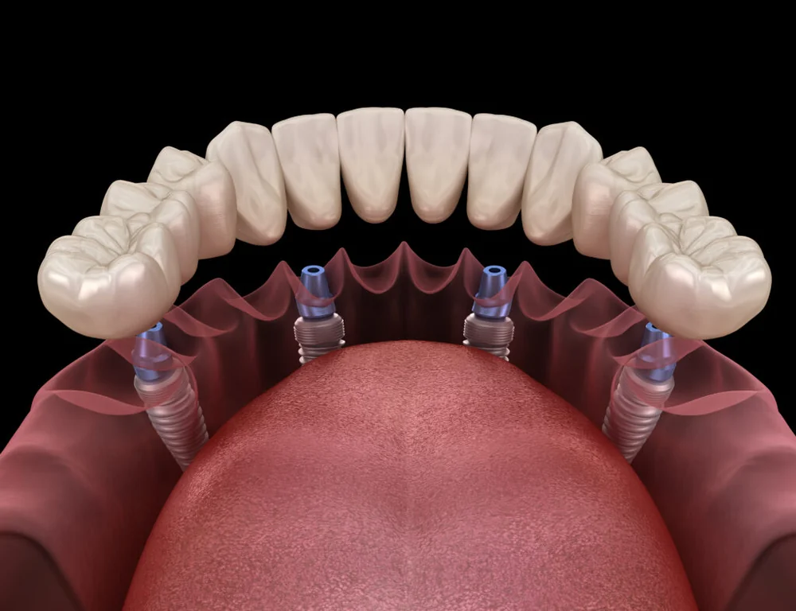
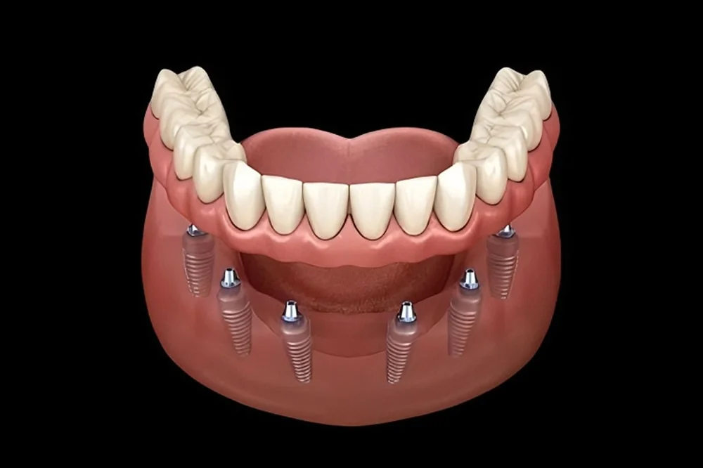
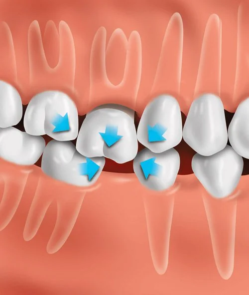

Chirurginis gydymas
Dantų šalinimas, implantacija ir visų dantų atkūrimas ant implantų — visapusiškas chirurginis gydymas vienoje vietoje.
Teikiamos chirurginės paslaugos
- Dantų šalinimas
- Implantacija
- Visų dantų atkūrimas ant implantų
Dantų šalinimas
Pacientui atvykus pas burnos chirurgą, išklausomi paciento nusiskundimai, atliekama klinikinė apžiūra, įvertinami radiologiniai tyrimai ir nustatoma problema. Tolimesnis žingsnis — gydymo plano individualiam atvejui sudarymas, aptariami galimi gydymo variantai, galimos komplikacijos. Pacientui apsisprendus pradėti gydymą, atliekamos chirurginės intervencijos ir tolimesni chirurginio gydymo etapai.
Danties ar dantų šalinimas gali būti atliekamas dėl keleto priežaščių: danties gydyti neįmanoma, dantis išdygęs netaisyklingai, dantis kelia komplikacijas, pacientui nustatyta parodontozė. Dažnai šalinimas reikalingas kaip ortodontinio gydymo plano dalis.
Burnos chirurgas taip pat atlieka:
- Protinių dantų šalinimą
- Cistų šalinimą
- Kaulinio audinio augmentaciją (priauginimą)
- Neišdygusių dantų šalinimą
- Kitas su žandikauliais susijusias procedūras
Implantacija
Danties ar dantų netekimas kiekvienam žmogui sukelia daug nepatogumų. Praradus dantis, paciento dažniausiai netenkina estetinis vaizdas — be to, dantų nebuvimas neigiamai veikia virškinimo funkcijas ir kalbėjimą.
Tačiau šiuolaikinė odontologija siūlo alternatyvas, kaip atkurti prarastus dantis. Klinikoje „Alytaus implantologijos centras" pacientams siūlomas profesionalus dantų atkūrimo būdas implantais ir ant jų tvirtinamais protezais. Tai pats moderniausias, efektyviausias ir pažangiausias dantų atkūrimo būdas, kurio metu įmanoma pasiekti estetiką, kramtymo funkciją ir atgauti paciento pasitikėjimą.
Konsultacijos metu gydytojas burnos chirurgas ištiria pacientą ir įvertina, koks gydymo būdas pasirinkti yra geriausia. Aptariami galimų variantų privalumai ir trūkumai esamoje individualioje situacijoje. Toliau seka paruošiamieji darbai, jeigu reikalinga — atliekamas danties pašalinimas. Jeigu dantis yra prarastas jau ilgą laiką, labai dažnai reikalinga atkurti sunykusį kaulinį audinį. Pagal poreikį, po įsriegtų implantų tvirtinami laikini protezai.
Koks būdas taikomas, norint atkurti vieną prarastą dantį?
- Tradicinė implantacija — implantas sriegiamas tik visiškai sugijus žandikauliui (po danties šalinimo). Po implanto prigijimo tvirtinamas laikinas dantis, o po kurio laiko — nuolatinis dantų vainikėlis.
- Momentinė implantacija — implantas sriegiamas iš karto po danties šalinimo. Pacientai dažnai pageidauja šio danties atkūrimo būdo, tačiau tik gydytojas burnos chirurgas gali įvertinti, ar tam tikrai situacijai tai galima atlikti.
Kokie būdai galimi norint atkurti kelis prarastus dantis?
Kuomet dantų nebuvimo problema sprendžiama išimamais protezais (dantų plokštelėmis) — kramtymo funkcija atkuriama tik dalinai. Dažnai tokie protezai prastai laikosi, yra nestabilūs, dažnai pacientai jaučiasi nekomfortiškai. Todėl dantų atkūrimas implantais ir ant implantų tvirtinamais protezais suteikia puikią natūralios šypsenos estetiką ir 100 % užtikrina kramtymo atstatymą.
Protezavimas ant 2 implantų
Pacientai, norintys atkurti prarastą kramtymo funkciją ant implantų, tačiau turintys ribotus finansus, gali rinktis specialią lokatorinę sistemą. Operacijos metu pacientui įsriegiami 2 implantai, ant kurių specialių lokatorių pagalba tvirtinamas išimamas protezas. Šis variantas pasižymi estetika, tvirtumu, stabilumu. Atkurtas mechanizmas suteikia galimybę laisvai valgyti, kalbėti. Kadangi protezas yra išimamas, jį lengva prižiūrėti.
Kokie būdai galimi norint atkurti visus prarastus dantis?
Protezavimas ant 4 implantų
Pacientams, norintiems daugiau komforto ir neišimamų nuolatinių protezų, siūloma „All-on-4" dantų protezavimo technologija. Operacijos metu sriegiami 4 implantai į vieną žandikaulį ir tvirtinami laikini, natūraliai atrodantys dantys.
Didžiausias šio metodo privalumas yra paciento pilnavertis gyvenimas — laisvai kalbant, šypsantis, kramtant maistą. Vėliau laikini dantys yra keičiami į nuolatinius. Šis dantų atkūrimo metodas dažniausiai tarnauja visą gyvenimą — operacija gana greita, saugi, todėl taikoma bet kokio amžiaus pacientams netekusiems dantų. Dar vienas metodikos privalumas — ji tinkama esant kaulo trūkumui, kuris dėl netektų dantų pradeda nykti.

Protezavimas ant 6–8 implantų
Norint maksimalaus prarastų dantų atkūrimo, ypač tikslaus dantų anatomijos vaizdo — atliekamas maksimalus prarastų dantų atkūrimas implantais. Galutinis reikalingų implantų skaičius nustatomas įvertinus paciento žandikaulių anatomines ypatybes. Iš karto po implantacijos gali būti dedamas laikinas protezas, kuris vėliau keičiamas nuolatiniu.

Kiek ilgai galima delsti neatkuriant prarasto danties implantu?
Vienas prarastas dantis gali stipriai paveikti visą sąkandį. Dantys ieško atramos netaisyklingais būdais ir labiau ardydami sąkandį. Iš lėto problemos vis rimtėja, tirpsta žandikaulio kaulas, dantys juda įvairiomis kryptimis sukeldami nepatogumus pacientui. Pacientui darosi sunkiau kramtyti, dantys tampa paslankūs.

Ar implantacija saugi?
Šiuolaikiniai implantai gaminami iš sveikatai draugiškų medžiagų, tad organizmui dažniausiai jokių nepageidaujamų reakcijų nėra. Dantų implantų patikimumą rodo daugybė laimingų pacientų visame pasaulyje. Dantų implantacijos metu taikoma vietinė nejautra, todėl pacientai skausmo nejaučia.
Kaulo priauginimo procedūra
Procedūra atliekama pacientams, kai nepakanka vertikalaus arba horizontalaus kaulo aukščio implanto įsriegimui. Operacija gali būti atliekama keliais būdais, priklausomai nuo paciento situacijos. Dažnai tos pačios operacijos metu sriegiami ir implantai, tačiau pasitaiko sudėtingesnių atvejų, kuomet po kaulo priauginimo procedūros turi praeiti 6 mėnesiai gijimo laikotarpis.
Kainos
Chirurginio gydymo kainos priklauso nuo procedūros sudėtingumo, naudojamų implantų tipo ir kaulo priauginimo poreikio. Tikslią kainą nustatome po pirmosios konsultacijos.